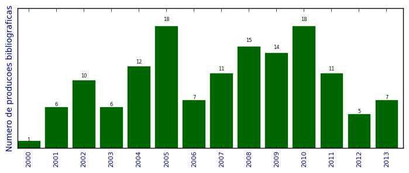

UFSM - Análise do Lattes
Total de produção bibliográfica

Número total de itens: 141
2013
| 1. | AUGUSTIN, I.. Computação Ubíqua: a terceira onda da computação. Revista Fontes. v. 10, p. 61-64, 2013. [ citações Google Scholar | citações Microsoft Acadêmico | busca Google ] Qualis: Não identificado (Revista Fontes) |
| 2. | FABRO NETO, A. ; BOUFLEUR, R. ; Azevedo, B. R. ; LIMA, João Carlos Damasceno ; AUGUSTIN, I.. A middleware to infer the risk level of an activity in context-aware environments using the SRK model. Em: UBICOMM, v. 1, p. 1-6, 2013.  [ citações Google Scholar | citações Microsoft Acadêmico | busca Google ] Qualis: B3 |
| 3. | MACHADO, A. ; AUGUSTIN, IARA ; PERNAS, A. M. ; WIVES, L. K. ; OLIVEIRA, J. P. M.. Situation-awareness as a Key for Proactive Actions in Ambient Assisted Living. Em: 15th International Conference on Enterprise Information Systems, p. 418, 2013. [ citações Google Scholar | citações Microsoft Acadêmico | busca Google ] Qualis: B1 (International Conference on Enterprise Information Systems) |
| 4. | Machado. A ; AUGUSTIN, I.. Sistema Pervasivo de Informação em Saúde Projetado para ser Programado pelo Usuário Clínico. Revista de Informática Teórica e Aplicada: RITA. v. 20, p. 49-64, 2013. [ citações Google Scholar | citações Microsoft Acadêmico | busca Google ] Qualis: B4 |
| 5. | Maran, V. ; PAZ, L. F. ; MACHADO, A. ; BOUFLEUR, R. ; AUGUSTIN, I.. Uma Arquitetura Móvel para Auxílio às Atividades do Programa de Agentes Comunitários De Saúde do SUS. Em: II Simpósio Brasileiro de Tecnologia da Informação (SBTI), v. 1, p. 1-8, 2013. [ citações Google Scholar | citações Microsoft Acadêmico | busca Google ] Qualis: Não identificado (II Simpósio Brasileiro de Tecnologia da Informação (SBTI)) |
| 6. | MARAN, VINÍCIUS ; AUGUSTIN, IARA ; LIBRELOTTO, GIOVANI RUBERT ; SACCOL, DEISE DE BRUM. Uma definição ontológica de elementos de contexto relevantes na adaptação de documentos em ambientes hospitalares pervasivos. Revista Brasileira de Computação Aplicada. v. 5, p. 26-41, 2013. [ citações Google Scholar | citações Microsoft Acadêmico | busca Google ] Qualis: B5 |
| 7. | PEREIRA, A. ; AUGUSTIN, IARA. A Learning Object Recommendation System. Em: Francisco Milton Mendes Neto (Universidade Federal do Semi-Árido). (Org.). Technology Platform Innovations and Forthcoming Trends in Ubiquitous Learning.. 1ed.Lisboa. : IGI Global. 2013.v. 1, p. 254-269. [ citações Google Scholar | citações Microsoft Acadêmico | busca Google ] |
2012
| 1. | AUGUSTIN, I. ; Maran, V.. Uma Arquitetura de Armazenamento de Informações de Contexto para Aplicações Ubíquas. 2012. Apresentação de Trabalho/Simpósio |
| 2. | LIMA, João Carlos Damasceno ; ROCHA, Cristiano Cortez da ; AUGUSTIN, I. ; DANTAS, M.. CARS-AD Project: Context-aware Recommender System for Authentication Decision in Pervasive and Mobile Environments. Em: Mr. Aden Karahoca. (Org.). Advances and Applications in Mobile Computing. 1ed.Lisboa. : InTech - Open Access Publisher. 2012.v. 1, p. 1. [ citações Google Scholar | citações Microsoft Acadêmico | busca Google ] |
| 3. | Maran, V. ; SACCOL, D. B. ; AUGUSTIN, I.. A Service for ClinicSpace Architecture to Provide Context Data Persistence and Context-Based Selection of Documents. Em: CSBC 2012 - Seminário de Software e Hardware (SEMISH), v. 1, p. 1-10, 2012. [ citações Google Scholar | citações Microsoft Acadêmico | busca Google ] Qualis: B4 (SEMISH) |
| 4. | Maran, V. ; SACCOL, D. B. ; AUGUSTIN, I.. Uma Arquitetura de Armazenamento de Informações de Contexto para Aplicações Ubíquas. Em: CSBC 2012 - IV Simpósio Brasileiro de Computação Ubíqua e Pervasiva (SBCUP), v. 1, p. 1-10, 2012. [ citações Google Scholar | citações Microsoft Acadêmico | busca Google ] Qualis: B5 (Simpósio Brasileiro de Computação Ubíqua e Pervasiva) |
| 5. | PEREIRA, A. ; FACCIN, L. F. ; LIBRELOTTO, Giovani R. ; Librelotto, G.R. ; AUGUSTIN, I.. Uma Ontologia para um Sistema de Recomendação de Materiais Didáticos em Educação a Distância Sensível ao Estado Afetivo do Aluno. Revista do CCEI. v. 16, p. 324-341, 2012. [ citações Google Scholar | citações Microsoft Acadêmico | busca Google ] Qualis: B5 |
2011
| 1. | KROTH, M. ; MACHADO, A. ; AUGUSTIN, I.. Suporte à Colaboração em uma Infraestrutura Computacional Pervasiva para Auxílio às Atividades Clínicas. Em: III Simpósio Brasileiro de Computação Ubíqua e Pervasiva (SBCUP), 2011. [ citações Google Scholar | citações Microsoft Acadêmico | busca Google ] Qualis: B5 (Simpósio Brasileiro de Computação Ubíqua e Pervasiva) |
| 2. | Librelotto, G. R. ; AUGUSTIN, I. ; GASSEN, J. B. ; KURTZ, G. ; FREITAS, L. ; MARTINI, R.. OntoHealth: An Ontology Applied to Pervasive Hospital Environments. Em: Maria Manuela Cruz-Cunha (Polytechnic Institute of Cavado and Ave, Portugal); Fernando Moreira (Portucalense University, Portugal). (Org.). Handbook of Research on Mobility and Computing: Evolving Technologies and Ubiquitous Impacts. 1ed.Lisboa. : IGI-Global Editora. 2011.v. 1, p. 1077-1090. [ citações Google Scholar | citações Microsoft Acadêmico | busca Google ] |
| 3. | LIMA, João Carlos Damasceno ; ROCHA, Cristiano Cortez da ; AUGUSTIN, I. ; DANTAS, M.. CARS-AD: a context-aware recommender system to decide about implicit or explicit authentication in UbiHealth. Em: MOBIWAC 2011, 2011. [ citações Google Scholar | citações Microsoft Acadêmico | busca Google ] Qualis: Não identificado (MOBIWAC 2011) |
| 4. | LIMA, João Carlos Damasceno ; ROCHA, Cristiano Cortez da ; AUGUSTIN, I. ; DANTAS, M.. A context-Aware Recommendation System to Behavioral Based Authentication in Mobile and Pervasive Environment. Em: IFIP IEEE 9th International Conference on Embedded and Ubiquitous Computing, 2011. [ citações Google Scholar | citações Microsoft Acadêmico | busca Google ] Qualis: B2 (IFIP International Conference on Embedded and Ubiquitous Computing) |
| 5. | MACEDO, R. T. ; FIORIN, A. ; LIBRELOTTO, Giovani R. ; LIBRELOTTO, Giovani R. ; AUGUSTIN, I. ; NUNES, R. C.. O impacto da Web 3.0 nas políticas de controle de acesso a internet. Revista do CCEI. v. 15, p. 169-185, 2011. [ citações Google Scholar | citações Microsoft Acadêmico | busca Google ] Qualis: B5 |
| 6. | MACHADO, A. ; AUGUSTIN, I.. Associando Contexto às Tarefas Clínicas na Arquitetura ClinicSpace. Em: VII Simpósio Brasileiro de Sistemas de Informação (SBSI), v. 1, 2011. [ citações Google Scholar | citações Microsoft Acadêmico | busca Google ] Qualis: B4 (Simpósio Brasileiro de Sistemas de Informação) |
| 7. | Maran, V. ; MACHADO, A. ; SACCOL, D. B. ; AUGUSTIN, I.. Um Serviço de Persistência de Contexto e Seleção Contextualizada de Documentos para a Arquitetura ClinicSpace. Em: XXXVII Conferencia Latinoamericana de Informática (CLEI), 2011. [ citações Google Scholar | citações Microsoft Acadêmico | busca Google ] Qualis: B4 (Conferencia Latinoamericana de Informática) |
| 8. | Maran, V. ; MACHADO, A. ; SACCOL, D. B. ; AUGUSTIN, I.. Um servico de persistencia e selecao contextualizada de documentos para a arquitetura ClinicSpaces. Em: XXXVII Conferencia Latinoamericada de Informatica (CLEI), 2011. [ citações Google Scholar | citações Microsoft Acadêmico | busca Google ] Qualis: B4 (Conferencia Latinoamericana de Informática) |
| 9. | Maran, V. ; MACHADO, A. ; SACCOL, D. B. ; AUGUSTIN, I.. Adding context data persistence based on ontologies in an ubiquitous healthcare architecture. Em: IADIS International Conference WWW-Internet, 2011. [ citações Google Scholar | citações Microsoft Acadêmico | busca Google ] Qualis: B2 (International Conference WWW/Internet) |
| 10. | ROCHA, Cristiano Cortez da ; LIMA, João Carlos Damasceno ; AUGUSTIN, I. ; DANTAS, M.. A2BeST: An Adaptive Authentication Service Based on Mobile User's Behavior and Spatio-Temporal Context. Em: IEEE International Symposium on Computer and Communications, v. 1, 2011. [ citações Google Scholar | citações Microsoft Acadêmico | busca Google ] Qualis: A2 (IEEE Symposium on Computers and Communications) |
| 11. | Rodrigues, S. ; YAMIN, Adenauer Correa ; AUGUSTIN, I.. Um Framework para o Gerenciamento de Aplicações Direcionadas à Medicina Ubíqua. Em: III Simpósio Brasileiro de Computação Ubíqua e Pervasiva (SBCUP), 2011. [ citações Google Scholar | citações Microsoft Acadêmico | busca Google ] Qualis: B5 (Simpósio Brasileiro de Computação Ubíqua e Pervasiva) |
2010
| 1. | FERREIRA, Giuliano Lopes ; LORENZI, Fabio ; RIZZETTI, Thiago Antionio ; Librelotto, G. R. ; YAMIN, Adenauer Correa ; AUGUSTIN, I.. Applying a middleware for pervasive environment to manage end-user programming of clinical activities. Em: The Fourth International Conference on Mobile Ubiquitous Computing, 2010. [ citações Google Scholar | citações Microsoft Acadêmico | busca Google ] Qualis: A1 (International Conference on Ubiquitous Computing) |
| 2. | KROTH, M. ; AUGUSTIN, I.. COMPARATIVO ENTRE PROJETOS DE INFRAESTRUTURA COMPUTACIONAL PERVASIVA PARA AMBIENTES CLÍNICOS. Em: IX Simpósio de Informática da Região Centro-Oeste RS (SIRC), v. 1, 2010. [ citações Google Scholar | citações Microsoft Acadêmico | busca Google ] Qualis: Não identificado (IX Simpósio de Informática da Região Centro-Oeste RS (SIRC)) |
| 3. | MACHADO, A. ; Librelotto, G. R. ; AUGUSTIN, I.. Ferramenta para Definição de Contexto pelo Usuário-Final na Programação de Tarefas Clínicas em um Sistema de Saúde Pervasivo. Em: II Simposio Brasileiro em Computação Ubíqua e Pervasiva, 2010. [ citações Google Scholar | citações Microsoft Acadêmico | busca Google ] Qualis: B5 (Simpósio Brasileiro de Computação Ubíqua e Pervasiva) |
| 4. | MACHADO, A. ; LORENZI, Fabio ; YAMIN, Adenauer Correa ; LIMA, João Carlos Damasceno ; Librelotto, G. R. ; AUGUSTIN, I.. APLICAÇÕES MÓVEIS DE ACESSO ÀS INFORMAÇÕES DO PACIENTE. Em: XII Congresso Brasileiro de Informática na Saúde, 2010, Porto de Galinhas, Pernambuco. CBIS 2010, 2010. [ citações Google Scholar | citações Microsoft Acadêmico | busca Google ] Qualis: Não identificado (XII Congresso Brasileiro de Informática na Saúde, 2010, Porto de Galinhas, Pernambuco. CBIS 2010) |
| 5. | MACHADO, A. ; VICENTINI, Caroline F. ; Librelotto, G. R. ; AUGUSTIN, I.. Ciência do Contexto para Tarefas Clínicas em um Sistema de Saúde Pervasivo. Em: XXXVI Conferência Latino-americana de Informática, 2010. [ citações Google Scholar | citações Microsoft Acadêmico | busca Google ] Qualis: B4 (Conferencia Latinoamericana de Informática) |
| 6. | RIZZETTI, Thiago Antionio ; AUGUSTIN, I.. ARQUITETURA PERVASIVA PARA ENTRADA AUTOMÁTICA DE DADOS NO AMBIENTE CLÍNICO. Em: XII Congresso Brasileiro de Informática na Saúde, 2010. [ citações Google Scholar | citações Microsoft Acadêmico | busca Google ] Qualis: B4 (Congresso Brasileiro de Informática em Saúde) |
| 7. | Rodrigues, S. ; LOPES, João Ladislau ; GEYER, C. ; AUGUSTIN, I. ; YAMIN, Adenauer Correa. Explorando o Processamento Semântico para Sensibilidade ao Contexto na Computação em Grade. Em: Conferencia Latino Americana de Computación de Alto Rendimiento, 2010. [ citações Google Scholar | citações Microsoft Acadêmico | busca Google ] Qualis: Não identificado (Conferencia Latino Americana de Computación de Alto Rendimiento) |
| 8. | Rodrigues, S. ; Venecian, L. ; AUGUSTIN, I. ; YAMIN, Adenauer Correa. uMED Uma Proposta Baseada em Processamento Semântico para a Medicina Ubíqua. Em: XII Congresso Brasileiro de Informática na Saúde, 2010, Porto de Galinhas, Pernambuco. CBIS 2010, 2010. [ citações Google Scholar | citações Microsoft Acadêmico | busca Google ] Qualis: Não identificado (XII Congresso Brasileiro de Informática na Saúde, 2010, Porto de Galinhas, Pernambuco. CBIS 2010) |
| 9. | Rodrigues, S. ; YAMIN, Adenauer Correa ; AUGUSTIN, I.. Revisando o Desenvolvimento de Aplicações na Medicina Ubíqua. Em: ERAD 2010 - Forum de Pós-Graduação, 2010. [ citações Google Scholar | citações Microsoft Acadêmico | busca Google ] Qualis: Não identificado (ERAD 2010 - Forum de Pós-Graduação) |
| 10. | SOUZA, M. V. ; AUGUSTIN, I.. Inferência de Atividades Clínicas a partir de Propriedades do Contexto. Em: Workshop em Informática Médica - Congresso SBC, 2010. [ citações Google Scholar | citações Microsoft Acadêmico | busca Google ] Qualis: Não identificado (Workshop em Informática Médica - Congresso SBC) |
| 11. | SOUZA, M. V. ; AUGUSTIN, I.. DETECÇÃO DE ATIVIDADES CLÍNICAS A PARTIR DO HISTÓRICO DE EXECUÇÃO DO USUÁRIO. Em: XII Congresso Brasileiro de Informática na Saúde, 2010. [ citações Google Scholar | citações Microsoft Acadêmico | busca Google ] Qualis: B4 (Congresso Brasileiro de Informática em Saúde) |
| 12. | Venecian, L. ; LOPES, João Ladislau ; PALAZZO, L. A. M. ; YAMIN, Adenauer Correa ; AUGUSTIN, I.. EXEHDA-SS: Uma Contribuição a Sensibilidade ao Contexto na Medicina Ubíqua. Em: ERAD 2010 - Forum de Pós-Graduação, 2010. [ citações Google Scholar | citações Microsoft Acadêmico | busca Google ] Qualis: Não identificado (ERAD 2010 - Forum de Pós-Graduação) |
| 13. | Venecian, L. ; Rodrigues, S. ; AUGUSTIN, I. ; YAMIN, Adenauer Correa. Um Mecanismo para Sensibilidade ao Contexto com Suporte Semântico na Computação Ubíqua. Em: XXXVI Conferência Latino-americana de Informática, 2010. [ citações Google Scholar | citações Microsoft Acadêmico | busca Google ] Qualis: B4 (Conferencia Latinoamericana de Informática) |
| 14. | VICENTINI, Caroline F. ; AUGUSTIN, I.. Requisitos para Sistema de Auxílio às Atividades dos Profissionais de Saúde em um Ambiente Ubíquo. Em: ERAD 2010 - Forum de Pós-Graduação, 2010. [ citações Google Scholar | citações Microsoft Acadêmico | busca Google ] Qualis: Não identificado (ERAD 2010 - Forum de Pós-Graduação) |
| 15. | VICENTINI, Caroline F. ; MACHADO, A. ; AUGUSTIN, I.. PEHS Arquitetura de um Sistema de Informação Pervasivo para Auxílio às Atividades Clínicas. Revista Brasileira de Computação Aplicada. v. 2, p. 69-80, 2010. [ citações Google Scholar | citações Microsoft Acadêmico | busca Google ] Qualis: B5 |
| 16. | VICENTINI, Caroline F. ; MACHADO, A. ; AUGUSTIN, I.. PEHS UM SISTEMA DEINFORMAÇÃO HOSPITALAR COM CARACTERÍSTICAS UBÍQUAS. Em: XII Congresso Brasileiro de Informática na Saúde, 2010, Porto de Galinhas, Pernambuco. CBIS 2010, 2010. [ citações Google Scholar | citações Microsoft Acadêmico | busca Google ] Qualis: Não identificado (XII Congresso Brasileiro de Informática na Saúde, 2010, Porto de Galinhas, Pernambuco. CBIS 2010) |
| 17. | VIERA, Matheus Anversa ; ROCHA, Cristiano Cortez da ; AUGUSTIN, I. ; DANTAS, M.. A user-Centric Authentication for Advanced Resource Reservation in Mobile Grid Environments. Em: International Conference on Grid Computing and Applications, 2010. [ citações Google Scholar | citações Microsoft Acadêmico | busca Google ] Qualis: B4 |
| 18. | VIERA, Matheus Anversa ; ROCHA, Cristiano Cortez da ; AUGUSTIN, I. ; DANTAS, M.. A Context-Aware Authentication Approach Based on Behavioral Definitions. Em: 2010 International Conference on Information and Knowledge Engineering, 2010. [ citações Google Scholar | citações Microsoft Acadêmico | busca Google ] Qualis: B4 (International Conference on Information and Knowledge Engineering) |
2009
| 1. | AUGUSTIN, I. ; Librelotto, G. R. ; SILVA, Fábio Lorenzi da ; FERREIRA, Giuliano Lopes. ClinicSpaces Project: building a tool to program and manage the physicians activities in the ubiquitous hospital environment. Em: Maria Manuela Cruz-Cunha; Fernando Moreira. (Org.). Handbook of Research on Mobility and Computing: Evolving Technologies and Ubiquitous Impacts. Lisboa. : IGI Global. 2009.. [ citações Google Scholar | citações Microsoft Acadêmico | busca Google ] |
| 2. | AUGUSTIN, I. ; SILVA, Fábio Lorenzi da ; FERREIRA, Giuliano Lopes ; Librelotto, G. R. ; YAMIN, Adenauer Correa. Middleware for management of end-user programming of clinical activities in a pervasive environment. Em: Workshop on Middleware to Pervasive and Ubiquitous Computing - co-locateed with COMSWARE, 2009. [ citações Google Scholar | citações Microsoft Acadêmico | busca Google ] Qualis: Não identificado (Workshop on Middleware to Pervasive and Ubiquitous Computing - co-locateed with COMSWARE) |
| 3. | FERREIRA, Giuliano Lopes ; LORENZI, Fabio ; Librelotto, G. R. ; AUGUSTIN, I.. Middleware for management of end-user programming of clinical activities in a pervasive environment. Em: on Middleware for Ubiquitous and Pervasive Systems (WMUPS), 2009. [ citações Google Scholar | citações Microsoft Acadêmico | busca Google ] Qualis: Não identificado (on Middleware for Ubiquitous and Pervasive Systems (WMUPS)) |
| 4. | FERREIRA, Giuliano Lopes ; LORENZI, Fabio ; Librelotto, G. R. ; AUGUSTIN, I.. Introduzindo o Gerenciando de Tarefas Clínicas em um Middleware da Computação Pervasiva. Em: Workshop em Informatica Medica, 2009. [ citações Google Scholar | citações Microsoft Acadêmico | busca Google ] Qualis: B4 (Workshop de Informática Médica) |
| 5. | FERREIRA, Giuliano Lopes ; SILVA, Fábio Lorenzi da ; Librelotto, G. R. ; YAMIN, Adenauer Correa ; AUGUSTIN, I.. Adaptando o Middleware EXEHDA para o Tratamento de Atividades Clínicas. Em: XXXV LATIN-AMERICAN CONFERENCE ON INFORMATICS, 2009. [ citações Google Scholar | citações Microsoft Acadêmico | busca Google ] Qualis: Não identificado (XXXV LATIN-AMERICAN CONFERENCE ON INFORMATICS) |
| 6. | Librelotto, G. R. ; GASSEN, J. B. ; FREITAS, L. ; AUGUSTIN, I.. Geração de Topic Maps Dirigidos por Ontologias para a Computação Sensível ao Contexto. Revista do CCEI. v. 13, p. 469-479, 2009. [ citações Google Scholar | citações Microsoft Acadêmico | busca Google ] Qualis: B5 |
| 7. | Librelotto, G. R. ; GASSEN, J. B. ; FREITAS, L. ; SILVA, Fábio Lorenzi da ; AUGUSTIN, I.. A Definição de uma API para o Processamento de Ontologias em Hospitais Pervasivo. Em: V Simpósio Brasileiro de Sistemas de Informação, 2009. [ citações Google Scholar | citações Microsoft Acadêmico | busca Google ] Qualis: B4 (Simpósio Brasileiro de Sistemas de Informação) |
| 8. | Librelotto, G. R. ; GASSEN, J. B. ; VIZZOTTO, J. K. ; AUGUSTIN, I.. Aplicando o OntoHealth para o Processamento e Consultas de Ontologias para Ambientes Hospitalares Pervasivos. iSys: Revista Brasileira de Sistemas de Informação. v. 2, p. 51-60, 2009. [ citações Google Scholar | citações Microsoft Acadêmico | busca Google ] Qualis: B3 |
| 9. | Librelotto, G. R. ; VIZZOTTO, J. K. ; AUGUSTIN, I.. Um Compilador para a Linguagem Reativa Síncrona Distribuída. Em: SBLP - Co-located workshop LTPD 2009, 2009. [ citações Google Scholar | citações Microsoft Acadêmico | busca Google ] Qualis: Não identificado (SBLP - Co-located workshop LTPD 2009) |
| 10. | LOPES, João Ladislau ; AUGUSTIN, I. ; YAMIN, Adenauer Correa. Uma Contribuição à Usabilidade da Sensibilidade ao Contexto na Computação Pervasiva. Em: XXXV LATIN-AMERICAN CONFERENCE ON INFORMATICS, 2009. [ citações Google Scholar | citações Microsoft Acadêmico | busca Google ] Qualis: Não identificado (XXXV LATIN-AMERICAN CONFERENCE ON INFORMATICS) |
| 11. | ROCHA, Cristiano Cortez da ; DANTAS, M. ; AUGUSTIN, I.. Uma Arquitetura de Reserva Antecipada de Recursos Centrada no Usuário para Ambientes de Grades Móveis. Em: 8th International Information and Telecommunication Technologies Symposium, 2009. [ citações Google Scholar | citações Microsoft Acadêmico | busca Google ] Qualis: B4 (Information and Telecommunication Technologies) |
| 12. | SILVA, Fábio Lorenzi da ; FERREIRA, Giuliano Lopes ; Librelotto, G. R. ; AUGUSTIN, I.. Ferramenta para a Programação pelo Usuário-Final de Tarefas Clínicas em um Ambiente de Saúde Ubíquo. Em: XXXV LATIN-AMERICAN CONFERENCE ON INFORMATICS, 2009. [ citações Google Scholar | citações Microsoft Acadêmico | busca Google ] Qualis: Não identificado (XXXV LATIN-AMERICAN CONFERENCE ON INFORMATICS) |
| 13. | VICENTINI, Caroline F. ; MACHADO, A. ; Librelotto, G. R. ; AUGUSTIN, I.. Requisitos de um Registro Eletrônico de Saúde Ubíquo. Em: VIII Simpósio de Informática da Região Centro do RS, 2009. [ citações Google Scholar | citações Microsoft Acadêmico | busca Google ] Qualis: Não identificado (VIII Simpósio de Informática da Região Centro do RS) |
| 14. | Warken, N. ; YAMIN, Adenauer Correa ; ANDRADE, Carmem Maria ; AUGUSTIN, I.. Controle da Adaptação na UbiComp (Position Paper). Em: I Simpósio Brasileiro de Computação Ubíqua e Pervasiva (SBCUP 2009), 2009, Bento Gon'calvez, RS. CSBC Anais. Porto Alegre: SBC Editora, 2009. [ citações Google Scholar | citações Microsoft Acadêmico | busca Google ] |
2008
| 1. | AUGUSTIN, I. ; VICENTINI, Caroline F. ; AVELAR, Francisco Tiago ; LIMA, João Carlos Damasceno. Emprego de Código de Barras Bidimensionais para Conferência da Autenticidade de Certificados Digitais. Disciplinarum Scientia. Série Ciências Exatas. v. 1, p. 1-8, 2008. [ citações Google Scholar | citações Microsoft Acadêmico | busca Google ] Qualis: C (Disciplinarum Scientia. Série Ciências Naturais e Tecnológicas) |
| 2. | AUGUSTIN, I. ; YAMIN, Adenauer Correa. Building a Smart Environment at Large-Scale with a Pervasive Grid Middleware. Em: Jiannong Wong. (Org.). Grid Computing Research Progress.. New York. : Nova Science Publishers, Inc. 2008.. [ citações Google Scholar | citações Microsoft Acadêmico | busca Google ] |
| 3. | AUGUSTIN, I. ; YAMIN, Adenauer Correa ; SILVA, Fábio Lorenzi da ; FERREIRA, Giuliano Lopes ; RIZZETTI, Thiago Antonio. Grade Computacional como Infra-estrutura para a Computação Pervasiva/Ubiqua. Em: SBC. (Org.). Escola Regional de Alto Desempenho (ERAD 2008). Porto Alegre. 2008.. [ citações Google Scholar | citações Microsoft Acadêmico | busca Google ] |
| 4. | Librelotto, G. R. ; AUGUSTIN, I.. A Semantica Formal da Linguagem RS. Em: Simposio Nacional de Linguagens de Programação, 2008. [ citações Google Scholar | citações Microsoft Acadêmico | busca Google ] Qualis: B3 (Simpósio Brasileiro de Linguagens de Programação) |
| 5. | Librelotto, G. R. ; GASSEN, J. B. ; AUGUSTIN, I.. Geracao de Topic Maps Dirigidos por Ontologia para Computação Sensivel ao Contexto. Em: Conferencia Iberica de Sistemas y Tecnologias de la Informacion, 2008. [ citações Google Scholar | citações Microsoft Acadêmico | busca Google ] Qualis: Não identificado (Conferencia Iberica de Sistemas y Tecnologias de la Informacion) |
| 6. | Librelotto, G. R. ; GASSEN, J. B. ; HENRIQUES, P. R. ; COPPETTI, M. ; FREITAS, L. ; AUGUSTIN, I.. GERAÇÃO DE TOPIC MAPS DIRIGIDOS POR ONTOLOGIAS PARA A COMPUTAÇÃO SENSÍVEL AO CONTEXTO. Em: 3ª Conferencia Ibérica de Sistemas y Tecnologías de la Información, 2008. [ citações Google Scholar | citações Microsoft Acadêmico | busca Google ] Qualis: Não identificado (3ª Conferencia Ibérica de Sistemas y Tecnologías de la Información) |
| 7. | Librelotto, G. R. ; GASSEN, J. B. ; SILVA, Fábio Lorenzi da ; AUGUSTIN, I. ; HENRIQUES, P. R.. Uma Ontologia Aplicada a um Ambiente Pervasivo Hospitalar. Em: 8ª Conferência da Associação Portuguesa de Sistemas de Informação, 2008. [ citações Google Scholar | citações Microsoft Acadêmico | busca Google ] Qualis: Não identificado (8ª Conferência da Associação Portuguesa de Sistemas de Informação) |
| 8. | Librelotto, G. R. ; GASSEN, J. B. ; TURCHETTI, Rogerio ; FREITAS, L. ; AUGUSTIN, I.. OntoHealth - Um framework para o gerenciamento de ontologias em ambientes hospitalares pervasivos. Em: II WORKSHOP ON PERVASIVE AND UBIQUITOUS COMPUTING, 2008, CAMPO GRANDE, MS. ANAIS WPUC 2008. Porto Alegre: SBC Editora, 2008. [ citações Google Scholar | citações Microsoft Acadêmico | busca Google ] Qualis: Não identificado (II WORKSHOP ON PERVASIVE AND UBIQUITOUS COMPUTING, 2008, CAMPO GRANDE, MS. ANAIS WPUC 2008. Porto Alegre: SBC Editora) |
| 9. | LIBRELOTTO, Giovani R. ; FREITAS, L. O. ; GASSEN, J. B. ; SILVEIRA, M. C. ; TURCHETTI, Rogério Correa ; SILVA, F. L. ; AUGUSTIN, I.. Uma Ferramenta para o Processamento da Representação do Domínio de Atividades Médicas. Hífen (Uruguaiana). v. 32, p. 25-32, 2008. [ citações Google Scholar | citações Microsoft Acadêmico | busca Google ] Qualis: C (Hífen (Uruguaiana. Online)) |
| 10. | LOPES, João Ladislau ; PALAZZO, L. A. M. ; YAMIN, Adenauer Correa ; COSTA, A. C. R. ; PILLA, M. L. ; AUGUSTIN, I.. An Approach Based on Ontologies for Improving Context-aware Usability in Pervasive Computing. Em: Dragan Stojanovic. (Org.). Context-Aware Mobile and Ubiquitous Computing for Enhanced Usability: Adaptive Technologies and Applications. : IGI Global. 2008.. [ citações Google Scholar | citações Microsoft Acadêmico | busca Google ] |
| 11. | ROCHA, C. C. ; VIERA, Matheus Anversa ; VIERA, Matheus Anversa ; OLIVEIRA, R. L. ; STEIN, B. O. ; AUGUSTIN, I. ; LIMA, J. C. D.. Projeto CONVERGE UFSM: Rede de Sensores-Atuadores para Controle de Acesso em Laboratórios Usando VoIP e Rede Sem Fio.. Disciplinarum Scientia. Série Ciências Exatas (Cessou em 2001. Cont. 1981-2841 Disciplinarum Scientia. Série Ciências Naturais e Tecnológicas). v. 1, p. 9-14, 2008. [ citações Google Scholar | citações Microsoft Acadêmico | busca Google ] Qualis: C (Disciplinarum Scientia. Série Ciências Naturais e Tecnológicas) |
| 12. | ROCHA, Cristiano Cortez da ; VIERA, Matheus Anversa ; OLIVEIRA, Rodolfo Leffa ; STEIN, Benhur Oliveira ; AUGUSTIN, I. ; LIMA, João Carlos Damasceno. Projeto CONVERGE UFSM: Rede de Sensores-Atuadores para Controle de Acesso em Laboratórios Usando VoIP e Rede Sem Fio. Disciplinarum Scientia. Série Ciências Exatas. v. 1, p. 9-14, 2008. [ citações Google Scholar | citações Microsoft Acadêmico | busca Google ] Qualis: C (Disciplinarum Scientia. Série Ciências Naturais e Tecnológicas) |
| 13. | SILVA, Fábio Lorenzi da ; FERREIRA, Giuliano Lopes ; RIZZETTI, Thiago Antonio ; Librelotto, G. R. ; YAMIN, Adenauer Correa ; AUGUSTIN, I.. Introduzindo a orientaçao a Tarefas Clínicas em um Middleware de Gerenciamento do Espaço Pervasivo. Em: II WORKSHOP ON PERVASIVE AND UBIQUITOUS COMPUTING, 2008, CAMPO GRANDE, MS. ANAIS WPUC 2008. Porto Alegre: SBC Editora, 2008. [ citações Google Scholar | citações Microsoft Acadêmico | busca Google ] Qualis: Não identificado (II WORKSHOP ON PERVASIVE AND UBIQUITOUS COMPUTING, 2008, CAMPO GRANDE, MS. ANAIS WPUC 2008. Porto Alegre: SBC Editora) |
| 14. | SILVA, Luciano Cavalheiro ; COSTA, C. ; AUGUSTIN, I. ; YAMIN, Adenauer Correa ; GEYER, Cláudio F Resin. On Control fo Adaptation in Ubiquitous Computing. Em: ACM Symposium on Applied Computing (SAC) - DADS Track, 2007, Fortaleza, Ceará. Proceedings SAC 2008 - SA. New York: ACM Ed, 2008. [ citações Google Scholar | citações Microsoft Acadêmico | busca Google ] Qualis: A1 (ACM Symposium on Applied Computing) |
| 15. | SILVA, Luciano Cavalheiro da ; COSTA, C. ; AUGUSTIN, I. ; YAMIN, Adenauer ; GEYER, Cláudio F Resin. On the Control of Adaptation in the Ubiquitous Computing Systems. Em: Symposium on Applied Computin (SAC)/ Track DADS, 2008, Fortaleza, CE. Proceedings of SAC 2008. New York: ACM Publisher, 2008. [ citações Google Scholar | citações Microsoft Acadêmico | busca Google ] Qualis: Não identificado (Symposium on Applied Computin (SAC)/ Track DADS, 2008, Fortaleza, CE. Proceedings of SAC 2008. New York: ACM Publisher) |
2007
| 1. | AUGUSTIN, I. ; LIMA, João Carlos Damasceno ; SILVA, Fábio Lorenzi da ; RIZZETTI, Thiago Antionio ; FERREIRA, Giuliano Lopes. Sistemas de Computação Móvel: da mobilidade à ubiquidade. Em: Universidade Federal de Santa Maria, SBC. (Org.). V Escola Regional de Redes de Computadores (ERRC). 2007.. [ citações Google Scholar | citações Microsoft Acadêmico | busca Google ] |
| 2. | FRAINER, Gustavo ; SILVA, Luciano Cavalheiro da ; AUGUSTIN, I. ; YAMIN, Adenauer Correa ; GEYER, Cláudio F R. Flexible Appplication and Context Aware Adaptation in a Pervasive File System. Em: 3rd International Conference on Self-Organization and Autonomous Systems in Computing and Communications, 2007, Leipzi. SOAS 2007, 2007. [ citações Google Scholar | citações Microsoft Acadêmico | busca Google ] Qualis: Não identificado (3rd International Conference on Self-Organization and Autonomous Systems in Computing and Communications, 2007, Leipzi. SOAS 2007) |
| 3. | FRAINER, Gustavo ; SILVA, Luciano Cavalheiro da ; AUGUSTIN, I. ; YAMIN, Adenauer Correa ; GEYER, Cláudio Resin. Utilizando Adaptação Consciente da Aplicação no Acesso a Arquivos em um Ambiente Pervasivo. Em: VIII Workshop em Sistemas Computacionais de Alto Desempenho, 2007. [ citações Google Scholar | citações Microsoft Acadêmico | busca Google ] Qualis: Não identificado (VIII Workshop em Sistemas Computacionais de Alto Desempenho) |
| 4. | FRAINER, Gustavo ; SILVA, Luciano Cavalheiro da ; GEYER, Cláudio F R ; AUGUSTIN, I. ; YAMIN, Adenauer Correa. Utilizando a Adaptação para permitir acesso a Arquivos em um Ambiente Pervasivo. Em: XXXIII Conferencia Latinoamericana de Informática, 2007. [ citações Google Scholar | citações Microsoft Acadêmico | busca Google ] Qualis: B4 (Conferencia Latinoamericana de Informática) |
| 5. | Librelotto, G. R. ; AUGUSTIN, I. ; TURCHETTI, Rogerio ; MARTINS, Mirkos Ortiz ; SARAIVA, Jonatas ; LORENZI, Fabio. Aplicando Topic Maps a Ambientes Sensíveis a Contexto. Em: I Workshop on Pervasive and Ubiquitous Computing, 2007. [ citações Google Scholar | citações Microsoft Acadêmico | busca Google ] Qualis: Não identificado (I Workshop on Pervasive and Ubiquitous Computing) |
| 6. | LOPES, João Ladislau ; PALAZZO, L. A. M. ; Librelotto, G. R. ; AUGUSTIN, I. ; YAMIN, Adenauer Correa. Uma abordagem baseada em Ontologias para Sensibilidade ao Contexto na Computação Pervasiva. Em: I Workshop on Pervasive and Ubiquitous Computing, v. 1, 2007. [ citações Google Scholar | citações Microsoft Acadêmico | busca Google ] Qualis: Não identificado (I Workshop on Pervasive and Ubiquitous Computing) |
| 7. | LOPES, João Ladislau ; YAMIN, Adenauer Correa ; AUGUSTIN, I. ; FRAINER, Gustavo ; SILVA, Luciano Cavalheiro ; GEYER, Cláudio F R. Towards Pervasive Applications in a Grid Computing Environment. Em: XXXIII Conferencia Latinoamericana de Informática (CLEI 2007), 2007. [ citações Google Scholar | citações Microsoft Acadêmico | busca Google ] Qualis: B4 (Conferencia Latinoamericana de Informática) |
| 8. | LORENZI, Fabio ; RIZZETTI, Thiago Antonio ; FERREIRA, Giuliano Lopes ; AUGUSTIN, I. ; NUNES, Raul Ceretta. Análise Comparativa de Detectores de Falha para Redes Móveis. Em: VI Simpósio de Informática da Região Centro/RS, 2007. [ citações Google Scholar | citações Microsoft Acadêmico | busca Google ] Qualis: Não identificado (VI Simpósio de Informática da Região Centro/RS) |
| 9. | Nino, C. P. ; MARQUES, J. ; SILVA, Luciano Cavalheiro da ; BARBOSA, Debora Nice Ferrari ; BARBOSA, Jorge V ; AUGUSTIN, I.. Context-Aware Model in a Ubiquitous Learning Environment. Em: Workshop on Pervasive Learning (Joint to PerCom 2007) - PerEL, 2007. [ citações Google Scholar | citações Microsoft Acadêmico | busca Google ] Qualis: Não identificado (Workshop on Pervasive Learning (Joint to PerCom 2007) - PerEL) |
| 10. | ROCHA, Cristiano Cortez da ; OLIVEIRA, Rodolfo Leffa ; VIERA, Matheus Anversa ; AUGUSTIN, I. ; STEIN, Benhur Oliveira ; LIMA, João Carlos Damasceno. Projeto CONVERGE UFSM - Rede de Sensores-Atuadores para Controle de Acesso em Laboratórios Usando VoIP e Wireless. Em: VI Simpósio de Informática da Região Centro/RS (SIRC), 2007. [ citações Google Scholar | citações Microsoft Acadêmico | busca Google ] Qualis: Não identificado (VI Simpósio de Informática da Região Centro/RS (SIRC)) |
| 11. | VICENTINI, Caroline F. ; AVELAR, Francisco Tiago ; LIMA, João Carlos Damasceno ; AUGUSTIN, I.. Emprego de Código de Barras Bidimensionais para Conferência da Autenticidade de Certificados Digitais. Em: VI Simpósio de Informática da Região Centro/RS, 2007. [ citações Google Scholar | citações Microsoft Acadêmico | busca Google ] Qualis: Não identificado (VI Simpósio de Informática da Região Centro/RS) |
2006
| 1. | AUGUSTIN, I. ; LIMA, João Carlos Damasceno ; ARAUJO NETO, Edmar Pessoa ; SILVA, Fábio Lorenzi da ; TIETBOHL, Luzandro Candido ; ROCHA, Cristiano Cortez da ; , Francisco Tiago Machado de Avelar. Serviço de Autenticação em Espaços Pervasivos, o caso do projeto pBuy. Em: V Simpósio de Informática da Região Centro do RS, 2006. [ citações Google Scholar | citações Microsoft Acadêmico | busca Google ] Qualis: Não identificado (V Simpósio de Informática da Região Centro do RS) |
| 2. | AUGUSTIN, I. ; LIMA, João Carlos Damasceno ; CORREAL, Julio ; RISS, Marcelo Aita ; ARAUJO NETO, Edmar Pessoa ; RIZZETTI, Thiago Antonio. JWebTester - Ferramenta para Testes de Aceitação Automatizados em Aplicações Web. Em: V Simpósio de Informática da Região Centro do RS, 2006. [ citações Google Scholar | citações Microsoft Acadêmico | busca Google ] Qualis: Não identificado (V Simpósio de Informática da Região Centro do RS) |
| 3. | AUGUSTIN, I. ; RIZZETTI, Thiago Antonio ; LIMA, João Carlos Damasceno ; TROIS, Celio. Ambiente Colaborativo P2P parao projeto PDCSE. Em: V Simpósio de Informática da Região Centro do RS, 2006. [ citações Google Scholar | citações Microsoft Acadêmico | busca Google ] Qualis: Não identificado (V Simpósio de Informática da Região Centro do RS) |
| 4. | AUGUSTIN, I. ; YAMIN, Adenauer Correa ; LIMA, João Carlos Damasceno. Computação Pervasiva: como programar aplicações. Em: X Simposio Brasileiro de Linguagens de Programação (SBLP), 2006. [ citações Google Scholar | citações Microsoft Acadêmico | busca Google ] Qualis: B3 (Simpósio Brasileiro de Linguagens de Programação) |
| 5. | AUGUSTIN, I. ; YAMIN, Adenauer Correa ; SILVA, Luciano Cavalheiro da ; REAL, Rodrigo Araujo ; FRAINER, Gustavo ; GEYER, Cláudio F Resin. ISAMadapt: Abstractions and Tools for Designing General-Purpose Pervasive Applications. Software Practice Experience Special Issue. 2006. [ citações Google Scholar | citações Microsoft Acadêmico | busca Google ] Qualis: Não identificado (Software Practice Experience Special Issue) |
| 6. | BARBOSA, Debora Nice Ferrari ; AUGUSTIN, I. ; BARBOSA, Jorge V ; SILVA, Luciano Cavalheiro da ; YAMIN, Adenauer Correa ; GEYER, Cláudio F Resin. Learning in a Large-Scale Pervasive Environment. Em: IEEE International Conference on Pervasive Computing and Communications 2006 - 2nd Workshop on Pervasive Learning (PerEL), 2006. [ citações Google Scholar | citações Microsoft Acadêmico | busca Google ] Qualis: A2 (International Conference on Pervasive Computing) |
| 7. | BARBOSA, Debora Nice Ferrari ; BARBOSA, Jorge V ; AUGUSTIN, I. ; SILVA, Luciano Cavalheiro da ; GEYER, Cláudio F Resin. A Proposal to Support Pervasive Learning. Em: XXXII Conferencia Latinoamericana de Informática, 2006. [ citações Google Scholar | citações Microsoft Acadêmico | busca Google ] Qualis: B4 (Conferencia Latinoamericana de Informática) |
2005
| 1. | AUGUSTIN, I. ; YAMIN, Adenauer Correa ; GEYER, Cláudio F Resin ; SILVA, Luciano Cavalheiro da ; REAL, Rodrigo Araujo. Managing the Follow-me Semantics to Build Large-Scale Pervasive Applications. Em: 6th International Middleware Conference - 3rd Internacional Workshop on Middleware for Pervasive and Adhoc Computing (MPAC), 2005. [ citações Google Scholar | citações Microsoft Acadêmico | busca Google ] Qualis: B3 (MPAC) |
| 2. | BELUSSO, Rubens Cesar ; AUGUSTIN, I. ; LIMA, João Carlos Damasceno. Análise de Alternativas a Apresentação Consciente do Dispositivo em um Ambiente Pervasivo. Em: VIII Forum de Tecnologias e XV Seminário Regional de Informática (SRI 2005), 2005. [ citações Google Scholar | citações Microsoft Acadêmico | busca Google ] Qualis: Não identificado (VIII Forum de Tecnologias e XV Seminário Regional de Informática (SRI 2005)) |
| 3. | FEHLBERG, Felipe Weber ; AUGUSTIN, I. ; YAMIN, Adenauer Correa ; SILVA, Luciano Cavalheiro da ; GEYER, Cláudio F Resin. Definindo e Usando Contexto Derivado de Multi-Sensores. Em: 3a. Escola Regional de Redes de Computadores (ERRC 2005), 2005. [ citações Google Scholar | citações Microsoft Acadêmico | busca Google ] Qualis: Não identificado (3a. Escola Regional de Redes de Computadores (ERRC 2005)) |
| 4. | MORAES, Mauricio C ; AUGUSTIN, I. ; YAMIN, Adenauer Correa ; SILVA, Luciano Cavalheiro da ; GEYER, Cláudio Resin. Disseminando Informações na Arquitetura ISAM. . Em: XXV Congresso Sociedade Brasileira de Computação - XXXII SEMISH, 2005. [ citações Google Scholar | citações Microsoft Acadêmico | busca Google ] Qualis: Não identificado (XXV Congresso Sociedade Brasileira de Computação - XXXII SEMISH) |
| 5. | MORAES, Mauricio Coutinho ; AUGUSTIN, I. ; YAMIN, Adenauer Correa ; SILVA, Luciano Cavalheiro da ; GEYER, Cláudio F Resin. DIMI - um Disseminador Multicast de Informações para a Arquitetura ISAM. Em: SBRC 2005 - Workshop Peer-to-Peer (WP2P), p. 97-108, 2005. [ citações Google Scholar | citações Microsoft Acadêmico | busca Google ] Qualis: B5 (WP2P) |
| 6. | MORAES, Mauricio Coutinho ; SILVA, Luciano Cavalheiro da ; EGON FILHO, Alberto S ; AUGUSTIN, I. ; YAMIN, Adenauer Correa ; GEYER, Cláudio F Resin. A Scalable Dissemination Service for the ISAM Architecture. Em: 17th Symposium International on Computer Architecture and High Performance Computing, p. 77-84, 2005. [ citações Google Scholar | citações Microsoft Acadêmico | busca Google ] Qualis: Não identificado (17th Symposium International on Computer Architecture and High Performance Computing) |
| 7. | PIRES, Rafael Pereira ; AUGUSTIN, I. ; LIMA, João Carlos Damasceno. Comunicação entre Coponentes da Aplicação em Ambiente Pervasivo. Em: VIII Forum de Tecnologias e XV Seminário Regional de Informática (SRI 2005), 2005. [ citações Google Scholar | citações Microsoft Acadêmico | busca Google ] Qualis: Não identificado (VIII Forum de Tecnologias e XV Seminário Regional de Informática (SRI 2005)) |
| 8. | PIRES, Rafael Pereira ; BELUSSO, Rubens Cesar ; REDIN, Ricardo Miotto ; LIMA, João Carlos Damasceno ; AUGUSTIN, I.. Arquitetura de Serviços para o Portal de Compras Pervasivo. Em: IV SImpósio da Região Centro do RS (SIRC 2005), 2005. [ citações Google Scholar | citações Microsoft Acadêmico | busca Google ] Qualis: Não identificado (IV SImpósio da Região Centro do RS (SIRC 2005)) |
| 9. | REDIN, Ricardo Miotto ; PIRES, Rafael Pereira ; BELUSSO, Rubens Cesar ; LIMA, João Carlos Damasceno ; AUGUSTIN, I.. Análise de Alternativas de Entrega de Dados Independente de Dispositivo em Ambiente de Computação Pervasiva. Em: JITEC 2005 - Jornada Integrada de Tecnologia e Computação, 2005. [ citações Google Scholar | citações Microsoft Acadêmico | busca Google ] Qualis: Não identificado (JITEC 2005 - Jornada Integrada de Tecnologia e Computação) |
| 10. | RIZZETTI, Thiago Antionio ; TROIS, Celio ; LIMA, João Carlos Damasceno ; AUGUSTIN, I.. Análise de Sistemas de Gerenciamento de Conteúdo para o Projeto EPOS. Em: IV SImpósio da Região Centro do RS (SIRC 2005), 2005. [ citações Google Scholar | citações Microsoft Acadêmico | busca Google ] Qualis: Não identificado (IV SImpósio da Região Centro do RS (SIRC 2005)) |
| 11. | S FILHO, Alberto Egon ; AUGUSTIN, I. ; YAMIN, Adenauer Correa ; GEYER, Cláudio F R ; SILVA, Luciano Cavalheiro da. Um serviço adaptativo para descoberta de recursos em larga escala na arquitetura ISAM. Em: SBRC 2005 - Workshop em Peer-to-Peer (WP2P), p. 85-96, 2005. [ citações Google Scholar | citações Microsoft Acadêmico | busca Google ] Qualis: B5 (WP2P) |
| 12. | S FILHO, Alberto Egon ; AUGUSTIN, I. ; YAMIN, Adenauer Correa ; GEYER, Cláudio F Resin ; SILVA, Luciano Cavalheiro da. Applying the ISAM Architecture for Genetic Alignment in a Grid Environment. . Em: III WORKSHOP DE GRADE COMPUTACIONAL E APLICAÇÕES (WGCA), 2005. [ citações Google Scholar | citações Microsoft Acadêmico | busca Google ] Qualis: Não identificado (III WORKSHOP DE GRADE COMPUTACIONAL E APLICAÇÕES (WGCA)) |
| 13. | SILVA, Luciano Cavalheiro da ; AUGUSTIN, I. ; YAMIN, Adenauer Correa ; GEYER, Cláudio F Resin ; S FILHO, Alberto Egon ; PIRES, Rafael Pereira ; REAL, Rodrigo Araujo. GRADEp: Towards Pervasive Grid Executions. Em: III WORKSHOP DE GRADE COMPUTACIONAL E APLICAÇÕES (WGCA), 2005. [ citações Google Scholar | citações Microsoft Acadêmico | busca Google ] Qualis: Não identificado (III WORKSHOP DE GRADE COMPUTACIONAL E APLICAÇÕES (WGCA)) |
| 14. | YAMIN, Adenauer Correa ; AUGUSTIN, I. ; BARBOSA, Jorge V ; GEYER, Cláudio Resin. ISAM - a Software Architecture for Pervasive Computing. Clei Electronic Journal. v. 8, n. 1, 2005. [ citações Google Scholar | citações Microsoft Acadêmico | busca Google ] Qualis: B5 (CLEI Electronic Journal) |
| 15. | YAMIN, Adenauer Correa ; AUGUSTIN, I. ; SILVA, Luciano Cavalheiro da ; GEYER, Cláudio F Resin. EXEHDA Middleware: Aspects to Manage the ISAM Pervasive Environment. Em: XXV International Conference of the Chilean Computer Science Society (SCCC), 2005. [ citações Google Scholar | citações Microsoft Acadêmico | busca Google ] Qualis: B3 (International Conference of the Chilean Computer Science Society) |
| 16. | YAMIN, Adenauer Correa ; AUGUSTIN, I. ; SILVA, Luciano Cavalheiro da ; REAL, Rodrigo Araujo ; EGON FILHO, Alberto S ; GEYER, Cláudio F Resin. EXEHDA: adaptive middleware for building a pervasive grid environment. Em: Hans Czap; Cherif Branki,; Rainer Unland,; Huaglory Tianfield. (Org.). Frontiers in Artificial Intelligence and Applications - Self-organization and Autonomic Informatics (I). 1ed.Amsterdam. : IOS Press. 2005.v. 135, p. 203-219. [ citações Google Scholar | citações Microsoft Acadêmico | busca Google ] |
| 17. | YAMIN, Adenauer Correa ; AUGUSTIN, I. ; SILVA, Luciano Cavalheiro da ; REAL, Rodrigo Araujo ; GEYER, Cláudio F Resin. EXEHDA: Adaptive Middleware for Building a Pervasive Grid Environment. Em: International Conference on Self-Organization and Adaptation of Multi-Agent and Grid Systems (SOAS), 2005. [ citações Google Scholar | citações Microsoft Acadêmico | busca Google ] Qualis: B4 (SOAS) |
| 18. | YAMIN, Adenauer Correa ; AUGUSTIN, I. ; SILVA, Luciano Cavalheiro da ; REAL, Rodrigo Araujo ; S FILHO, Alberto Egon ; GEYER, Cláudio F Resin. Middleware to Support Pervasive Grid Applications. Em: 6th International Middleware Conference - Workshop on Middleware for Grid Computing, 2005. [ citações Google Scholar | citações Microsoft Acadêmico | busca Google ] Qualis: Não identificado (6th International Middleware Conference - Workshop on Middleware for Grid Computing) |
2004
| 1. | AUGUSTIN, I.. Abstrações para uma Linguagem de Programação visando Aplicações no Ambiente de Pervasive Computing. Porto Alegre. 2004. Tese de Doutorado [ citações Google Scholar | citações Microsoft Acadêmico | busca Google ] |
| 2. | AUGUSTIN, I. ; SILVA, Marcus Lucas da ; PIRES, Rafael Pereira ; REDIN, Ricardo Miotto ; LIMA, João Carlos Damasceno ; GEYER, Cláudio F Resin. Explorando Adaptação Dinâmica ao Contexto no Projeto de Aplicações da Computação Pervasiva. Em: III Simpósio de Informática da Região Centro, 2004. [ citações Google Scholar | citações Microsoft Acadêmico | busca Google ] Qualis: Não identificado (III Simpósio de Informática da Região Centro) |
| 3. | AUGUSTIN, I. ; YAMIN, Adenauer Correa ; BARBOSA, Jorge V ; GEYER, Cláudio F Resin. Uma Arquitetura de Software para Pervasive Computing. Em: CLEI - Congresso Latino-americano de Informática, 2004. [ citações Google Scholar | citações Microsoft Acadêmico | busca Google ] Qualis: Não identificado (CLEI - Congresso Latino-americano de Informática) |
| 4. | AUGUSTIN, I. ; YAMIN, Adenauer Correa ; GEYER, Cláudio F R ; CAVALHEIRO, G. G. H. ; BARBOSA, Jorge V ; REAL, R. ; SILVA, Luciano Cavalheiro. ISAM, Joing Context-awareness and Mobility to Building Pervasive Applications. . Em: MAHGOUB, I.; ILYAS, M. (Ed). (Org.). Mobile Computing Handbook. New York. : CRC Press. 2004.p. 73-94. [ citações Google Scholar | citações Microsoft Acadêmico | busca Google ] |
| 5. | AUGUSTIN, I. ; YAMIN, Adenauer Correa ; LIMA, João Carlos Damasceno ; GEYER, Cláudio F Resin ; SILVA, Luciano Cavalheiro. ISAMadapt - um ambiente de desenvolvimento de aplicações para a Computação Pervasiva. Em: 8th Brazilian Symposium on Programming Language (SBLP), 2004. [ citações Google Scholar | citações Microsoft Acadêmico | busca Google ] Qualis: B3 (SBLP) |
| 6. | BRUSAMARELLO, Lucas ; AUGUSTIN, I. ; YAMIN, Adenauer ; GEYER, Cláudio F Resin ; REAL, Rodrigo Araujo ; SILVA, Luciano Cavalheiro. Timing Verification Based on Floating Vector Simulation: a Distributed Approach. Em: IBERCHIP 2004, 2004. [ citações Google Scholar | citações Microsoft Acadêmico | busca Google ] Qualis: Não identificado (IBERCHIP 2004) |
| 7. | EGON FILHO, Alberto S ; AUGUSTIN, I. ; YAMIN, Adenauer Correa ; GEYER, Cláudio F Resin ; SILVA, Luciano Cavalheiro. PerDiS: um modelo para descoberta de recursos na arquitetura ISAM. Em: Workshop em Computação Sem Fio e Computação Móvel, 2004. [ citações Google Scholar | citações Microsoft Acadêmico | busca Google ] Qualis: Não identificado (Workshop em Computação Sem Fio e Computação Móvel) |
| 8. | EGON FILHO, Alberto S ; AUGUSTIN, I. ; YAMIN, Adenauer Correa ; GEYER, Cláudio F Resin ; SILVA, Luciano Cavalheiro. PerDiS, a Scalable Resource Discovery Service for the ISAM Pervasive Environment. Em: Hot Topics in Peer-to-Peer Systems, 2004. [ citações Google Scholar | citações Microsoft Acadêmico | busca Google ] Qualis: Não identificado (Hot Topics in Peer-to-Peer Systems) |
| 9. | EGON FILHO, Alberto S ; AUGUSTIN, I. ; YAMIN, Adenauer Correa ; GEYER, Cláudio F Resin ; SILVA, Luciano Cavalheiro. A Practical Grid Experience Using the ISAM Architecture for Genetic Sequence Alignment. . Em: ACM/IFIP/USENIX Middleware 2004 Workshops Grid, 2004. Middleware 2004, 2004. [ citações Google Scholar | citações Microsoft Acadêmico | busca Google ] |
| 10. | EGON FILHO, Alberto S ; AUGUSTIN, I. ; YAMIN, Adenauer Correa ; SILVA, Luciano Cavalheiro ; GEYER, Cláudio F Resin. Uma Proposta de Descoberta de Recursos no ISAM Pervasive Environment. Em: Workshop GPPD, 2004. [ citações Google Scholar | citações Microsoft Acadêmico | busca Google ] Qualis: Não identificado (Workshop GPPD) |
| 11. | FRAINER, Gustavo ; AUGUSTIN, I. ; YAMIN, Adenauer Correa ; GEYER, Cláudio F Resin ; SILVA, Luciano Cavalheiro. Aplicando uma técnica baseada em perfil para balanceamento adaptativo de carga no ISAM. Em: Escola Regional de Alto Desempenho, 2004. [ citações Google Scholar | citações Microsoft Acadêmico | busca Google ] Qualis: B5 |
| 12. | S FILHO, Alberto Egon ; AUGUSTIN, I. ; YAMIN, Adenauer Correa ; SILVA, Luciano Cavalheiro da ; GEYER, Cláudio F Resin. A Practical Grid Experience Using the ISAM Architecture for Genetic Sequence Alignment. Em: Middleware Conference 2004 - Whorkshop on Grid Computing, 2004, Canada. Anais, 2004. [ citações Google Scholar | citações Microsoft Acadêmico | busca Google ] |
2003
| 1. | AUGUSTIN, I. ; YAMIN, Adenauer Correa ; SILVA, Luciano Cavalheiro da ; REAL, Rodrigo Araujo ; BARBOSA, Jorge V ; GEYER, Cláudio F Resin. ISAMadapt: ambiente de desenvolvimento de aplicações para o paradigma da pervasive computing.. Cadernos de Informática (UFRGS), Porto Alegre. v. 3, n. 1, p. 109-114, 2003. [ citações Google Scholar | citações Microsoft Acadêmico | busca Google ] Qualis: C (Cadernos de Informática (UFRGS)) |
| 2. | REAL, Rodrigo Araujo ; SILVA, Luciano Cavalheiro da ; YAMIN, Adenauer Correa ; AUGUSTIN, I. ; GEYER, Cláudio F Resin. Tratamento de Incerteza no Escalonamento de Recursos em Pervasive Computing. Em: International Conference WWW-Internet, p. 167-170, 2003. [ citações Google Scholar | citações Microsoft Acadêmico | busca Google ] Qualis: B2 (International Conference WWW/Internet) |
| 3. | REAL, Rodrigo Araujo ; SILVA, Luciano Cavalheiro da ; YAMIN, Adenauer Correa ; AUGUSTIN, I. ; GEYER, Cláudio F Resin. Resource Scheduling on Grid: Handling Uncertainty. Em: GRID 2003 - International Workshop on Grid Computing, 2003. [ citações Google Scholar | citações Microsoft Acadêmico | busca Google ] Qualis: Não identificado (GRID 2003 - International Workshop on Grid Computing) |
| 4. | REAL, Rodrigo Araujo ; YAMIN, Adenauer Correa ; AUGUSTIN, I. ; SILVA, Luciano Cavalheiro da ; BARBOSA, Jorge V ; GEYER, Cláudio F Resin. Handling the Uncertainty in the Resource Scheduling on Grid Computing. Em: IV International Workshop on Grid Computing (Grid2003), p. 205-208, 2003. [ citações Google Scholar | citações Microsoft Acadêmico | busca Google ] Qualis: Não identificado (IV International Workshop on Grid Computing (Grid2003)) |
| 5. | YAMIN, Adenauer ; AUGUSTIN, I. ; BARBOSA, Jorge V ; SILVA, Luciano Cavalheiro ; REAL, R. ; GEYER, Cláudio F Resin. Towards Merging Context-aware, Mobile and Grid Computing. Journal Of High Performance Computing Application, London. v. 17, n. 2, p. 191-203, 2003. [ citações Google Scholar | citações Microsoft Acadêmico | busca Google ] Qualis: Não identificado (Journal Of High Performance Computing Application, London) |
| 6. | YAMIN, Adenauer Correa ; AUGUSTIN, I. ; SILVA, Luciano Cavalheiro da ; REAL, Rodrigo Araujo ; BARBOSA, Jorge V ; GEYER, Cláudio F Resin. EXEHDA: um ambiente de execução para adaptação dinâmica ao contexto de aplicações na pervasive computing. Cadernos de Informática (UFRGS), Porto Alegre. v. 3, n. 1, p. 115-120, 2003. [ citações Google Scholar | citações Microsoft Acadêmico | busca Google ] Qualis: C (Cadernos de Informática (UFRGS)) |
2002
| 1. | AUGUSTIN, I. ; YAMIN, Adenauer Correa ; BARBOSA, Jorge V ; GEYER, Cláudio F Resin. Taxonomy for Mobile Applications with Adaptive Behavior. Em: Pdcn 2002 Int Symp Parallel And Distributed Computing Networking, 2002. [ citações Google Scholar | citações Microsoft Acadêmico | busca Google ] Qualis: Não identificado (Pdcn 2002 Int Symp Parallel And Distributed Computing Networking) |
| 2. | AUGUSTIN, I. ; YAMIN, Adenauer Correa ; BARBOSA, Jorge V ; GEYER, Cláudio F Resin. ISAM - a Software Architecture for Adaptive and Distributed Mobile Applications. Em: ISCC 2002 - 7th IEEE Symp Computers And Communications, p. 333-339, 2002. [ citações Google Scholar | citações Microsoft Acadêmico | busca Google ] Qualis: Não identificado (ISCC 2002 - 7th IEEE Symp Computers And Communications) |
| 3. | AUGUSTIN, I. ; YAMIN, Adenauer Correa ; GEYER, Cláudio F Resin. Distributed Mobile Applications with Dynamic Adaptive Behavior. Em: Cata 2002 - 17th Int Conf Computer And Their Applications, 2002. [ citações Google Scholar | citações Microsoft Acadêmico | busca Google ] Qualis: Não identificado (Cata 2002 - 17th Int Conf Computer And Their Applications) |
| 4. | BARBOSA, J. ; YAMIN, Adenauer ; AUGUSTIN, I. ; GEYER, C.. Holoparadigm: a Multiparadigm Model Oriented to Development of Distributed System. Em: Ninth International Conference on Parallel and Distributed Systems. december 17-20., 2002. [ citações Google Scholar | citações Microsoft Acadêmico | busca Google ] Qualis: B1 (International Conference on Parallel and Distributed Systems) |
| 5. | GEYER, Cláudio F Resin ; SILVA, Luciano Cavalheiro da ; YAMIN, Adenauer Correa ; AUGUSTIN, I. ; VARGAS, Patricia Kaiser ; BARBOSA, Jorge V. Regional Center and Grid Development in Brazil. Em: Lafex International School on High Energy Physics (LISHEP), v. 8, 2002. [ citações Google Scholar | citações Microsoft Acadêmico | busca Google ] Qualis: Não identificado (Lafex International School on High Energy Physics (LISHEP)) |
| 6. | REIS, R. ; REIS, C. L. ; AUGUSTIN, I. ; YAMIN, Adenauer Correa ; GEYER, Cláudio F Resin ; NUNES, Daltro. Towards a Software Process Model to Support the Design of Mobile Computing Applications. Em: Idpt 2002 - 6th World Conf Integrated Design And Process Technology, 2002. [ citações Google Scholar | citações Microsoft Acadêmico | busca Google ] Qualis: Não identificado (Idpt 2002 - 6th World Conf Integrated Design And Process Technology) |
| 7. | REIS, Rodrigo Quites ; REIS, Carla ; AUGUSTIN, I. ; YAMIN, Adenauer Correa ; NUNES, Daltro ; GEYER, Cláudio F Resin. Towards a Software Process to Support the design of Mobile Computing Applications. Em: World Conference on Integrated Design and Process Technology (IDPT), 2002. [ citações Google Scholar | citações Microsoft Acadêmico | busca Google ] Qualis: Não identificado (World Conference on Integrated Design and Process Technology (IDPT)) |
| 8. | YAMIN, Adenauer ; AUGUSTIN, I. ; SILVA, L. ; REAL, R. ; CAVALHEIRO, G. ; BARBOSA, J. ; GEYER, C.. A Framework for Exploiting Adaptation in High Heterogeneous Distributed Processing. Em: 14th Symp. Computer Architecture and High Performance Computing, 2002. [ citações Google Scholar | citações Microsoft Acadêmico | busca Google ] Qualis: Não identificado (14th Symp. Computer Architecture and High Performance Computing) |
| 9. | YAMIN, Adenauer Correa ; AUGUSTIN, I. ; BARBOSA, J. ; GEYER, Cláudio F R. ISAM: a Pervasive View in Distributed Mobile Computing. Em: NET-CON02. Network Control and Engineering for QoS, p. 431-436, 2002. [ citações Google Scholar | citações Microsoft Acadêmico | busca Google ] Qualis: Não identificado (NET-CON02. Network Control and Engineering for QoS) |
| 10. | YAMIN, Adenauer Correa ; AUGUSTIN, I. ; BARBOSA, Jorge V ; SILVA, Luciano Cavalheiro ; CAVALHEIRO, G. G. H. ; GEYER, C. F.. Collaborative Multilevel Adaptation in Distributed Mobile Applications. . Em: SCC02. XXII International Conference of the Chilean Computer Science Society., p. 82-90, 2002. [ citações Google Scholar | citações Microsoft Acadêmico | busca Google ] Qualis: B3 (International Conference of the Chilean Computer Science Society) |
2001
| 1. | ARAÚJO, E. ; AUGUSTIN, I. ; YAMIN, Adenauer Correa ; SILVA, L. ; GEYER, Cláudio F Resin. Uma Proposta de Monitoração para Visualização de Aplicações Distribuídas Java. Em: Jornadas Chilenas de Computación 2001, 2001. [ citações Google Scholar | citações Microsoft Acadêmico | busca Google ] Qualis: Não identificado (Jornadas Chilenas de Computación 2001) |
| 2. | AUGUSTIN, I. ; YAMIN, Adenauer Correa ; BARBOSA, Jorge V ; GEYER, Cláudio F Resin. Requisitos para o Projeto de Aplicações Móveis Distribuídas. Em: VIII Cacic Congreso Argentino de Ciencias de La Computación, 2001. [ citações Google Scholar | citações Microsoft Acadêmico | busca Google ] Qualis: Não identificado (VIII Cacic Congreso Argentino de Ciencias de La Computación) |
| 3. | AUGUSTIN, I. ; YAMIN, Adenauer Correa ; GEYER, Cláudio F Resin ; BARBOSA, Jorge V ; CAVALHEIRO, G. H.. ISAM, um Middleware para Aplicações Móveis Distribuídas. Rita Revista de Informática Teórica e Aplicada, Porto Alegre, RS. v. VIII, n. 2, p. 1-12, 2001. [ citações Google Scholar | citações Microsoft Acadêmico | busca Google ] Qualis: B4 (Revista de Informática Teórica e Aplicada: RITA) |
| 4. | SILVA, E. ; AUGUSTIN, I. ; YAMIN, Adenauer Correa ; BARBOSA, Jorge V ; GEYER, Cláudio F Resin. Hierarquia de Gerenciamento de Redes com Componentes Móveis. Em: VIII Cacic Congreso Argentino de Ciencias de La Computación, 2001. [ citações Google Scholar | citações Microsoft Acadêmico | busca Google ] Qualis: Não identificado (VIII Cacic Congreso Argentino de Ciencias de La Computación) |
| 5. | SILVA, L. ; YAMIN, Adenauer Correa ; AUGUSTIN, I. ; GEYER, Cláudio F Resin ; BARBOSA, Jorge V. Mecanismos de Suporte ao Escalonamento em Sistemas com Objetos Distribuídos Java. Em: VII Cacic Congreso Argentino de Ciencias de La Computación, 2001. [ citações Google Scholar | citações Microsoft Acadêmico | busca Google ] Qualis: Não identificado (VII Cacic Congreso Argentino de Ciencias de La Computación) |
| 6. | YAMIN, Adenauer Correa ; AUGUSTIN, I. ; GEYER, Cláudio F Resin ; BARBOSA, Jorge V. Explorando o Escalonamento no Desempenho de Aplicações Móveis Distribuídas. Em: II Workshop Em Sistemas Computacionais de Alto Desempenho, 2001. [ citações Google Scholar | citações Microsoft Acadêmico | busca Google ] Qualis: Não identificado (II Workshop Em Sistemas Computacionais de Alto Desempenho) |
2000
| 1. | AUGUSTIN, I.. Acesso aos Dados no Contexto da Computação Móvel. Porto Alegre: PPGC-II. UFRGS. 2000. Monografia [ citações Google Scholar | citações Microsoft Acadêmico | busca Google ] |
(*) Relatório criado com produções desde 1999 até HOJE
Data de processamento: 02/04/2014 18:12:47